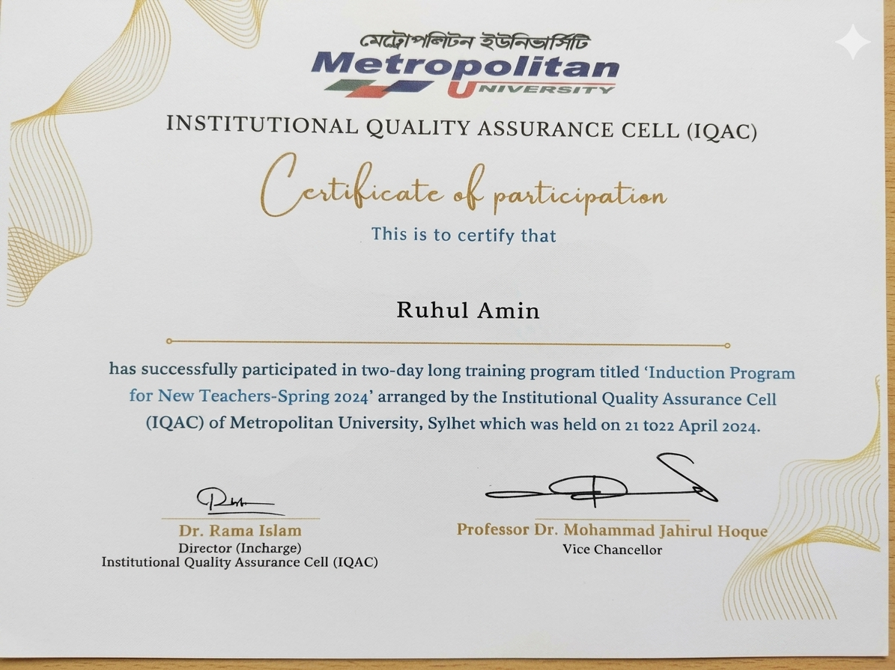
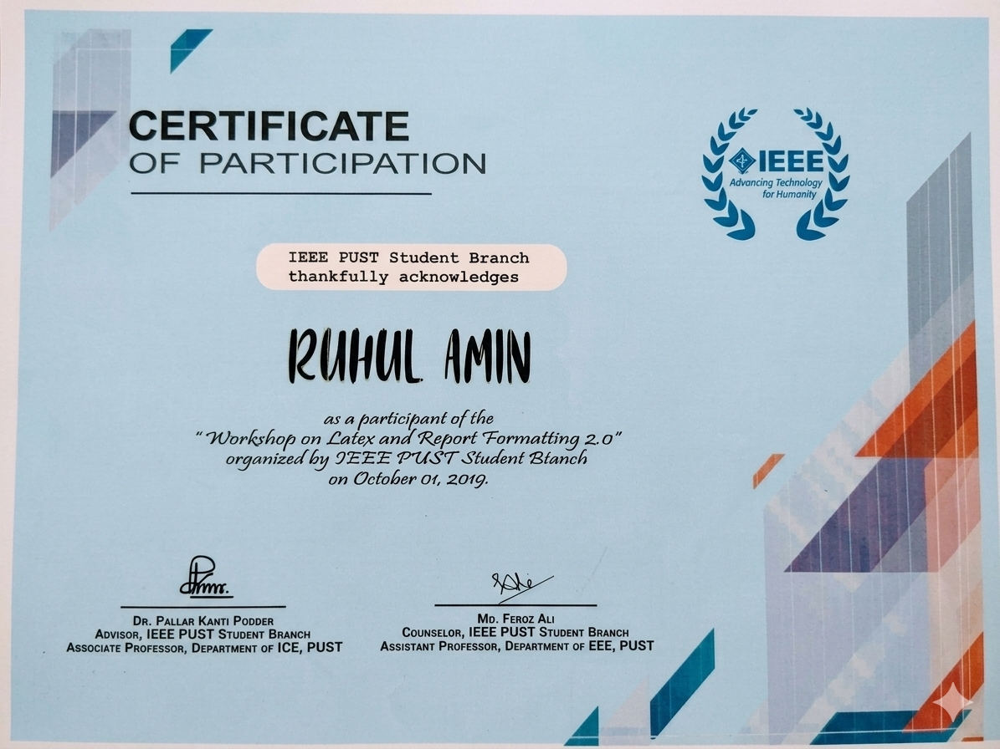

About Me
I am a Senior Lecturer in the Department of Computer Science and Engineering at Metropolitan University, Sylhet, Bangladesh. My research focuses on artificial intelligence, machine learning, deep learning, medical image analysis, healthcare analytics, and statistical modeling, with an emphasis on developing intelligent solutions for disease diagnosis and clinical decision support.
I received both my B.Sc. (2019) and M.S. (2021) in Statistics from Pabna University of Science and Technology (PUST), Bangladesh. My research has been published in leading international journals, including IEEE Access, IEEE Open Journal of the Computer Society, Scientific Reports, Heliyon, Electronics, and Informatics in Medicine Unlocked. I am a recipient of the National Science and Technology (NST) Fellowship and serve as a reviewer for several international journals, including Informatics in Medicine Unlocked (Elsevier) and PLOS ONE. I am always interested in collaborating on interdisciplinary research in AI, data science, and healthcare.
Research Areas
Statistical Learning Algorithms, Pattern Recognition, Computer Vision, Machine Learning, Deep Learning, Health Informatics, Bioinformatics, Medical Imaging and Image Processing.
Professional Experience
Served as a Data Analyst at the One Health Center for Research and Action (OHCRA), Chattogram, Bangladesh, on the project Social Demographic Profile and Commodities of Diabetic Patients: A Case Study in Bangladesh.
Education
- CGPA: 3.89 / 4.00 (Merit Position: 2nd)
- Thesis: Multi-modal Osteoporosis Diagnosis: Clinical Risk Factors & Interpolated X-ray Images with Machine Learning Approach
- CGPA: 3.51 / 4.00 (Merit Position: 3rd)
- Thesis: K-Means Clustering and Its Application to Image Segmentation
Journal Research Papers
- Ruhul Amin, Muhammad Muzzammil, Jannatul Mauya, Md. Shamim Reza, Md. Manuruzzaman, Choudhury Mukammel Wahid, Huoungju Kim, Jungpil Shin. "Data-Driven Prediction of Maternal Health Risk Level Using Machine Learning". IEEE Open Journal of the Computer Society, pp. 1-12, 2026. DOI: 10.1109/OJCS.2026.3676081. (Q1, SCI and Scopus, IF= 8.2).
- Dewan Ahmed Muhtasim, Rishad Amin Pulok, Md. Fahmidur Rahman Sakib, Ruhul Amin, Bushra Azmat Hussain, Muhammad Muzammil, Md. Mahfujul Hasan, Siok Yee Tan. "Dense Stack Meta Ensemble Classifier (DSMEC): An Advanced Stacking Ensemble Approach for Early Cardiovascular Disease Prediction with Robust Feature Engineering". IEEE Access, vol. 13, 2025. DOI: 10.1109/ACCESS.2025.3598285. (Q1, SCI and Scopus, IF= 3.476).
- Ruhul Amin, Md. Shamim Reza, Dewan Ahmed Muhtasim, Jungpil Shin, Md. Maniruzzaman, Md. Mahfujul Hasan. "Grid Search Based Hyperparameter-Tuned Deep Learning Model for Osteoporosis Diagnosis with Bi-Cubic Interpolation of X-Ray Images". Human-Centric Intelligent Systems, vol. 5, pp. 196–208, 2025. DOI: 10.1007/s44230-025-00102-9. (Q1, Scopus).
- Ruhul Amin, Md. Jamil Khan, Tonway deb Nath, Md. Shamim Reza, Jungpil Shin. "Harmonization of Heart Disease Dataset for Accurate Diagnosis: A Machine Learning Approach Enhanced by Feature Engineering". CMC-Computers, Materials & Continua, 2025. DOI: 10.32604/cmc.2025.061645. (Q2, SCI and Scopus, IF= 2.1).
- Jannatul Mauya, Ruhul Amin, Md. Imam Hossain, Md. Shamim Reza. "Improved multiscale attention based deep learning approach for automated sugarcane leaf disease detection using BSRI data". Scientific Reports, Nature Portfolio, 2025. DOI: 10.1038/s41598-025-28947-x. (Q1, SCIE and Scopus, IF= 3.9).
- Ruhul Amin, Md. Shamim Reza, Md. Maniruzzaman, Md. Al Mehedi Hasan, Hyoun-Sup Lee, Si-Woong Jang, Jungpil Shin. "Intensive Statistical Exploration to Identify Osteoporosis Predisposing Factors and Optimizing Recognition Performance with Integrated GP Kernels". IEEE Access, vol. 11, pp. 131338-131350, Dec. 2023. DOI: 10.1109/ACCESS.2023.3336422. (Q1, SCI and Scopus, IF= 3.476).
- Ruhul Amin, Md. Shamim Reza, Yuichi Okuyama, Yoichi Tomioka, Junpil Shin. "A Fine-Tuned Hybrid Stacked CNN to Improve Bengali Handwritten Digit Recognition". Electronics, MDPI, vol. 12, p. 3337, Aug. 2023. (Q2, SCI, IF= 2.90).
- Ruhul Amin, Rubia Yasmin, Sabba Ruhi, Md. Habibur Rahman, Md. Shamim Reza. "Prediction of chronic liver disease patients using integrated projection based statistical feature extraction with machine learning algorithms". Informatics Medicine Unlocked, vol. 36, p. 101155, 2023. DOI: 10.1016/j.imu.2022.101155. (Q2, Scopus, IF= 6.12).
- Md. Shamim Reza, Ruhul Amin, Rubia Yeasmin, Woomme Kulsum, Sabba Ruhi. "Improving Diabetes Disease Patients Classification Using Stacking Ensemble Method with PIMA and Local Healthcare Data". Heliyon, vol. 10, Jan. 2024. DOI: 10.1016/j.heliyon.2024.e24536. (Q1, SCI and Scopus, IF= 3.77).
- Saad Sahriar, Sanjida Akther, Jannatul Mauya, Ruhul Amin, Md. Shahajada Mia, Sabba Ruhi, Md. Shamim Reza. "Unlocking stroke prediction: Harnessing projection-based statistical feature extraction with ML algorithms". Heliyon, vol. 10, March 2024. DOI: 10.1016/j.heliyon.2024.e27411. (Q1, SCI and Scopus, IF= 3.77).
- Md. Shamim Reza, Umme Hafsha, Ruhul Amin, Rubia Yasmin, Sabba Ruhi. "Improving SVM Performance for Type II Diabetes Prediction with an Improved Non-Linear Kernel: Insights from the PIMA Dataset". Computer Methods and Programs in Biomedicine Update, 2023. DOI: 10.1016/j.cmpbup.2023.100118. (Q1, Scopus).
- Md. Razu Ahmed, Jannatul Mauya, Md. Shamim Reza, Ruhul Amin. "Sophisticated Audio Source Separation: A Statistical Exploration of Clarity and Precision With FastICA". Engineering Reports, Wiley, 2024. DOI: 10.1002/eng2.70575. (Q2, Scopus, IF= 1.80).
- Jannatul Mauya, Saad Sahriar, Sanjida Akther, Ruhul Amin, Md. Shamim Reza, Sabba Ruhi. "Missing Risk Factor Prediction in Cardiovascular Disease Using a Blended Dataset and Optimizing Classification with a Stacking Algorithm". Engineering Reports, Wiley, Oct. 2024. DOI: 10.1002/eng2.13034. (Q2, Scopus, IF= 1.80).
- Rubia Yasmin, Ruhul Amin, Dr. Md. Shamim Reza. "Effects of hybrid non-linear feature extraction method on different data sampling techniques for liver disease prediction". Journal of Future Sustainability, vol. 2, no. 2, pp. 57–64, 2022. DOI: 10.5267/j.jfs.2022.9.005.
Conference Proceedings
- Ruhul Amin, Md. Jamil Khan, Md. Shamim Reza, Md. Maniruzzaman. "Uncivering the Complex pattern to Accurately Diagonsis of Heart Disease: Feature Interaction-Driven Insights Using ML Algorithm". 8th International Conference on "The Role of Statistics and Data Science in 4IR" (ICRSDS4IR) to be held on 26-28 December, 2024.
- Rubia Yasmin, Ruhul Amin, Md. Shamim Reza. "Design of Novel Feature Union for Prediction of Liver Disease Patients: A Machine Learning Approach". In: The Fourth Industrial Revolution and Beyond: Select Proceedings of IC4IR+, Lecture Notes in Electrical Engineering, Springer Nature, pp. 515-526, 2023. DOI: 10.1007/978-981-19-8032-9_36. (Scopus).
- Dewan Ahmed Muhtasim, Monirul Islam Pavel, Arindrajit Paul, Ruhul Amin, Abdul Wadud Shakib, Md. Shamihul Islam Khan Limon, Md. Mahfujul Hasan. "Novel Ensemble Model Utilizing Artificial Neural Networks and Boosting Regressors for Estimation of PM2.5 Concentrations". 6th International Conference on Sustainable Technologies for Industry 5.0 (STI 2024), IEEE Xplore.
Research Funding, Awards & Reviewing
National Science & Technology (NST) Fellowship
Selected as an NST Fellow by the Ministry of Science and Technology, Government of Bangladesh, for research on "Osteoporosis Classification Using Customized Convolution Neural Network: A Case Study in Bangladesh".
Innovative Research Project Grant (PUST)
Awarded PUST Innovative Project Grant for research on "An Online Diagnosis of Osteoporosis Patients Grading Using Artificial Intelligence Tools: A Case Study in Pabna".
Journal Reviewing
Actively serve as an expert peer reviewer for peer-reviewed journals, including:
- PLOS ONE
- Informatics in Medicine Unlocked (Elsevier)
Induction Program for New Teachers (Spring 2024)
Metropolitan University, Sylhet | April 2024
Completed a two-day professional training program on teaching excellence, academic quality assurance, and institutional policies.

Workshop on EndNote & Thesis Formatting 2.0
IEEE PUST Student Branch | October 2019
Participated in a workshop on EndNote, reference management, and professional thesis formatting.

Teaching & Languages
Course Taught:
- Basic Statistics and Probability
- Matrix, Complex Variable and Fourier Analysis
- Numerical Methods
- Basic Artificial Intelligence
- Differential Equations and Laplace Transformation
Languages